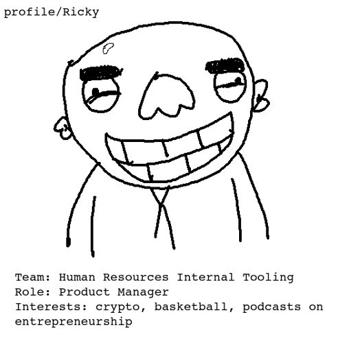

RICKY: KIRIN! Kirin, Kirin, Kirin. So great to finally get some time
with you.
KIRIN: Yes, great to meet you Ricky.
RICKY (EYES DARTING AROUND THE ROOM, TRYING TO RECONTEXTUALIZE):
Cool... cool, cool, cool.
RICKY (WHO THE FUCK IS KIRIN? WHY ARE WE MEETING?): SO!
RICKY (GOD DAMNIT RICKY, YOU NEVER PREPARE. BUT YOU KNOW WHAT--
THAT'S WHAT I LOVE ABOUT YOU. LET'S WING IT BABY):
I'm excited for this!
RICKY CLAPS EXPECTANTLY.
KIRIN: Uh, I'm really excited to hear about my project?
RICKY: YES! You need a project Kirin. Project. We've got some
great projects on this team. I'm about to give you one!
RICKY (SILENTLY, TO HIMSELF): Come on Ricky, this man needs a
project, give me a project.
RICKY: Your project is... your project is...
RICKY (STRUCK, WIDE-EYED, ALMOST YELLING): YOU WILL BE PORTING OUR
~ENTIRE~ HR TOOLING MOBILE SUITE TO LOW END ANDROID PHONES FOR
BUSINESSES IN DEVELOPING COUNTRIES!
RICKY (SILENTLY, TO HIMSELF): You're a god damn pro, Ricky.
KIRIN (DEVASTATED): Awesome!
RICKY: Super awesome, Kirin. I'm really excited for you. You
see, as a product manager, my ear is always on the pulse of *upper
management*. And you wanna know the harsh truth Kirin? They
don't respect us. They think, "Human Resources Internal
Tooling", and think, "That's a team? What the fuck do
they do? How much are we paying these guys?" Hell, if I
hadn't bombed my placement interviews, you think I'd here?
I belong on the Foogle Video team, Kirin, or at the VERY LEAST, News
Feed Optimization. God!
RICKY (SIGHING): Whatever. What's done is done. We're here
now. This is our team, and we've got to make the best of it.
And that means making upper management respect us. Our team needs an
image overhaul.
We've got to think like upper management, Kirin. What do they
want to see?
KIRIN: I'm not sure.
RICKY: Expansion to third world countries. Emerging markets.
That's the new hot topic these days. Indonesia, Kirin. Now,
I've never been to Indonesia. I have no idea what the fuck goes
on there. But according to our data scientists, a shit ton of them
are using Foogle. And they're really into it. These
guys'll spend ALL DAY on the app doing God knows what, trading
coconuts, I guess.
KIRIN (TAKING NOTES): Wow. Got it.
KIRIN'S NOTES: - INDONESIA. COCONUTS?
RICKY: The challenge with emerging markets is they're all using
these garbage phones on bad wifi. So all the big teams-- Video,
Marketplace, News-- you know-- they're all racing to get their
bloated first world software running on these tiny screens with
spotty internet and 10 megabytes of memory or whatever, because they
know that if their product works with these guys-- and there are
billions of them, Kirin! Billions!-- if it works with these billions
of super-users, their engagement will go through the roof, upper
management will cream themselves, and they'll all get huge
promotions.
Now, our metrics are abysmal, Kirin. We have one hundred users.
Pathetic. Video has two billion. TWO BILLION. And once they hit
Indonesia... God, it'll be a blood-bath.
KIRIN: Uh, but our team makes internal tools right? Software to help
Pagii's human resources staff? And there are only a hundred of
them right, right? Don't we kind of... max out at 100 users?
RICKY: You think the Assistant VP of Internal Infrastructure is
going to take that bullshit excuse? These guys don't care,
Kirin. They want to see numbers. Big numbers. Write that down.
KIRIN'S NOTES: - INDONESIA. COCONUTS? - BIG NUMBERS
RICKY: Visualize with me Kirin. You're an Indonesian coconut
refurbisher. One of your employees is turning fifty three. He's
going to die soon. Life expectancy probably ain't great out
there. You need to find a new employee. How are you going to do it?
KIRIN: Ask around, I guess?
RICKY: These people aren't neanderthals, Kirin. Jesus. No.
You're going to take out your 2008 Motorola ShitBrick and load
up the PAGII HUMAN RESOURCES SUITE. You press the
"RECRUIT" button, pay five grand, and BOOM-- we scrape the
whole internet, LinkedIn, Twitter, Instagram, Blogspot, everything.
We search the whole god damn world to assemble a list of hundreds of
potential candidates, perfectly selected to your opening. Pay
another five grand, and BOOM-- we'll use neural networks to
generate a custom orientation video for your new hire. Let's
say we screwed up and the new guy's a creep. Five grand, and
BOOM-- generate the workplace harassment paperwork and a severance
package. All on your crappy 2G connection.
KIRIN: Wow. Cool. But uh, do we already know if this is possible,
technically? Or how long all this would take? It's hard for me
to estimate since I haven't been ramped up yet.
RICKY: My job is to come up with the grand plan, Kirin. The
"How" and even the "Why" are just details.
You'll figure it out. Believe in yourself. Where there's a
will there's a way. Just get it done by the end of H1.
2:48 - RICKY MAKES A CLICKING SOUND WITH HIS MOUTH AND POINTS A
FINGER GUN AT KIRIN, LOOKS OFF TO THE SIDE, PAUSES, CLAPS ONCE, AND
EXITS ROOM.
HOME